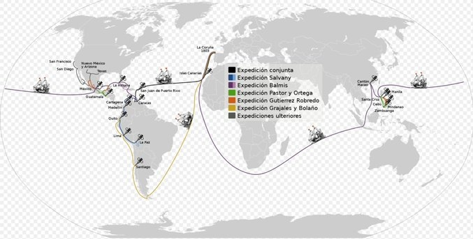
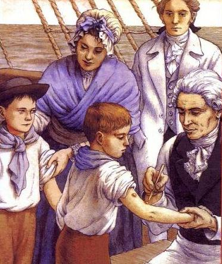
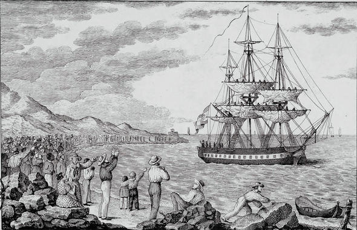
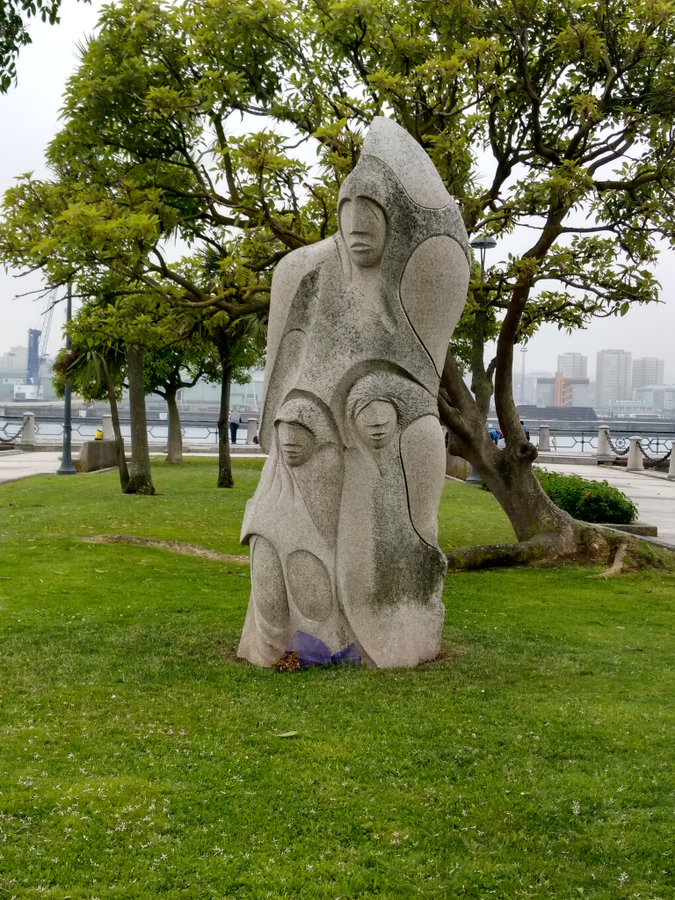

Los Hilos de Monik
Real Expedición Filantrópica de la Vacuna
Publicado el 16 de abril de 2021 - 21 tweets - Hilo original en Twitter
1
«Una caravana infantil con rumbo al Nuevo Mundo para transportar la vacuna y prevenir epidemias de viruela. Uno de los viajes más extraños, tiene como protagonista a la medicina y a la ciencia en el SXIX»
¿Ciencia ficción? No; fue la Real Expedición Filantrópica de la Vacuna.
2
También conocida como Expedición Balmis - por el médico español Francisco Javier Balmis - dio la vuelta al mundo desde 1803 hasta 1806 para llevar la vacuna contra la viruela a todo el Imperio español.
Se considera la 1ra expedición sanitaria internacional de la historia.
3
El rey Carlos IV apoyó y sufragó con fondos públicos al médico de la corte, el doctor Balmis, en su idea de una vacunación masiva de niños a lo largo del Imperio, ya que su propia hija, la infanta María Teresa, había fallecido a causa de la enfermedad.
4
El principal problema era cómo conseguir que la vacuna resistiese todo el trayecto en perfecto estado.
Se intentó transportar animales infectados, pero el largo camino y la necesidad de gran cantidad de forraje para su alimentación encarecían los viajes e impedían el traslado.
5
También trataron de llevar el fluido en cristales lacrados y envueltos en paños negros para preservarlo del aire y del sol. Pero el largo viaje y las altas temperaturas echaban a perder las muestras.
La solución se le ocurrió al propio Balmis: transporte humano en vivo.
6
Iría a bordo un grupo de personas no vacunadas. Se les inocularía el virus de 2 en 2, separando a los infectados del resto, de forma sucesiva hasta llegar a América.
No se buscaron voluntarios; Balmis optó por llevar consigo 22 niños huérfanos (expósitos) de entre 3 y 9 años.
7
¿Por qué se usaron niños en la Real Expedición de la Vacuna?
Porque una persona adulta podía haberse inmunizado frente al virus sin haber manifestado externamente la enfermedad. Usar niños pequeños garantizaba que no estaban inmunizados.
Les llamaron: "niños vacuníferos".
8
El 30 de noviembre de 1803 zarpó el navío "Maria Pita" con 37 personas desde el puerto de La Coruña.
Llevaba a Francisco Javier Balmis, 2 médicos asistentes, 3 enfermeros, 22 niños y a la rectora del orfanato Casa de Expósitos de La Coruña, Isabel Zendal Gómez.
9
Isabel Zendal fue la única mujer de la expedición, y a ella se le atribuye la mayor parte del cuidado de los niños, que iba más allá de lo relacionado con las vacunas. Los documentos de la época hablan de mareos, vómitos, gastroenteritis ... eran niños muy pequeños.
10
«Con excesivo trabajo y rigor de los diferentes climas que hemos recorrido (...) infatigable noche y día ha derramado todas las ternuras de la más sensible Madre sobre los 26 angelitos que tiene a su cuidado (...) los ha asistido enteramente en sus continuadas enfermedades»
11
La expedición llega a Puerto Rico en febrero de 1804 y luego a Venezuela. Allí se dividen: un grupo, dirigido por el propio Balmis, se dirige a Cuba y México, el otro, a cargo del subdirector José Salvany, se adentra en América del Sur.
12
Balmis terminará cruzando el Pacífico hasta Filipinas; pasó por el sur de China –Cantón y Macao- antes de regresar a España en 1806.
Salvany, sin embargo, tuvo más problemas al atravesar un territorio más complicado como el andino, terminó enfermando y falleció en Cochabamba.
13
Ya en América, se hizo necesario buscar niños nuevos para continuar trasladando la vacuna.
Para que quede claro: se necesitaban de 12 a 16 niños cada 25 o 30 días... y la expedición duró tres años.
14
De acuerdo con la Circular para la Propagación de la Vacuna, los niños «serán bien tratados, mantenidos y educados, hasta que tengan ocupación o destino con que vivir, conforme a su clase y devueltos a los pueblos de su naturaleza» ... pero esto no sucedió en la práctica.
15
Cuando la expedición llegó a La Habana, eran 27 niños, pues se habían sumado varios en Venezuela.
Pero se encontraron con que ya estaba avanzada en el país la campaña de vacunación (ya hablé de eso en otro hilo)
16
Balmis solicitó al Capitán General de Cuba niños «sanos y robustos, de edad de 12 a 15 años» pero se encontró con la escasez de niños sin vacunar y a ciudadanos reacios a dar sus hijos. Esto llevó a que por primera vez usara niños esclavos para transportar la vacuna.
17
En Cuba, Balmis compró 3 niñas esclavas de Santiago de Cuba ... las únicas niñas conocidas en el transporte del fluido vacuno durante la expedición, por cierto.
Los niños que salieron de La Coruña fueron dejados en un hospicio en Mexico, en las peores condiciones.
18
En febrero de 1805, Balmis zarpó rumbo a Filipinas en un barco de pasajeros.
Llevaba 26 "niños vacuníferos" mexicanos, transportados en una zona del barco «lleno de inmundicias y de grandes ratas que los atemorizaban, tirados en el suelo rodando y golpeándose unos a otros».
19
El propio Balmis reconoció que los alimentaban con carne de vacas muertas de enfermedad, frijoles, lentejas y un poco de dulce, y que algunos pasajeros del barco les daban parte de sus alimentos.
Finalmente, Balmis regresó a España en 1806.
20
La expedición resultó un éxito. Llevó la vacuna a amplios territorios y desarrolló las estructuras organizativas necesarias para conservarla y administrarla. Balmis también elaboró todo un reglamento necesario para organizar campañas de vacunación y de información.
21
La vida de los niños de la Real Expedición Filantrópica de la Vacuna fue muy dura. Viajaron portando una enfermedad, sorteando los mareos del mar y largos trayectos por tierra.
Este monumento en La Coruña les rinde homenaje a los 22 galleguitos iniciales ¿Y el resto?